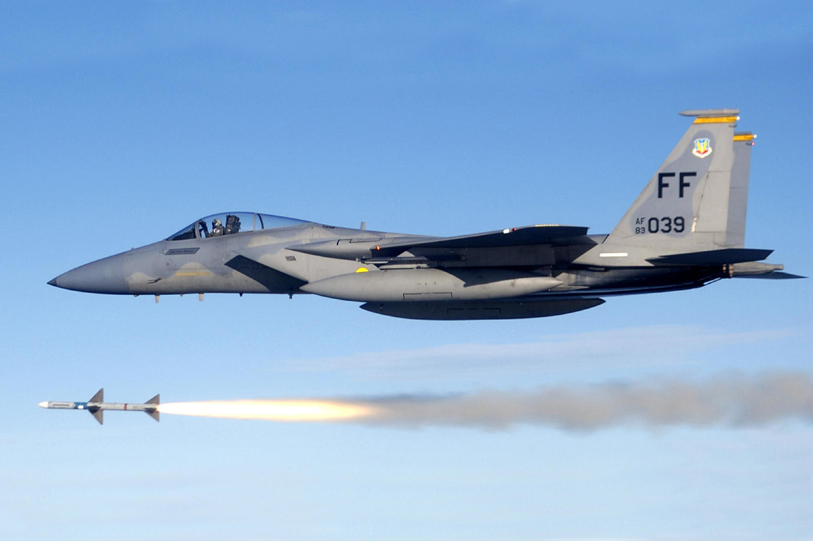
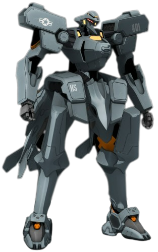

McDonnell Douglas F-15 Eagle
| Descrição | |
|---|---|
| Função: | Superioridae Aérea |
| Local de Origem: | Estados Unidos |
| Fabricante: | McDonnell Douglas
Boeing Defense, Space & Security |
| Primeiro Voo: | 27 de Julho de 1972 |
| Introduzido em: | 8 de Janeiro de 1976 |
| Status: | Em serviço |
| Utilziadores: | Estados Unidos
Japão Arábia Saudita Israel |
| Produzido: | 1972 até Hoje |
| Caractersiticas Gerais | |
| Tripulação: | 1 |
| Comprimento: | 19.43m |
| Altura: | 5.64m |
| Envergadura das Asas: | 13.06m |
| Area das Asas: | 56.5m² |
| Peso Vazio: | 12.701kg |
| Peso Bruto: | 20.185kg |
| Peso Máximo de Decolagem: | 30.844kg |
| Capacidade de Combustivel: | 6.103kg Internamente |
| Performace | |
| Motores: | 2 x Pratt & Whitney F100-PW-220 Turbofans Afterburnig |
| Empuxo: |
|
| Velocidade Máxima: | Mach 2.5 ou 2.655km/h |
| Alcance: | Não disponivel ao Publico |
| Alcance de Combate: | 1.965km |
| Armamento | |
| Armas: | 1 x Canhão Rotatorio de 20mm M61A1 Vulcan de 6 Barris com 940 Disparos |
| Hardpoint | 9 sendo 2 sob a asa, 4 sobre a fuselagem e um na estação do pilar central do caça. COm ao todo com capacidae de levar 7.300kg |
| Misseis |
Ar-Ar:
|
O McDonnel Douglas F-15 Eagle um caça de superioridade aéra de dois motores, sendo um caça desevoldido pela McDonnell Douglas (Parte da Boeing), sendo proposto para a USAF,
como um caça dedicado a superioridade aéra, sendo que ele foi desevolvido como uma contra-medida ao Mikoyan-Gurevich MiG-25.

O Eagle entrou em serviço em 1976 com o seu primeiro voo acontecendo em julho de 72, sendo que ele é um dos caças bem sucedido dentre os caças modernos. O Eagle foi expotado para vairas nações, como Israel,
Japão e a Arábia Saudita. Embora o F-15 tenha sido desevoldido para ser um caça puramente de superioridae aérea, ele foi desenhado com capacidae de ataque ao solo com uma função secundaria. Sendo que ele se demonstrou ser flesivel o bastante,
para no futuro, terem desevoldido o F-15E Strike Eagle.

Curiosidades
O F-15 Eagle é um dos caças que até o dia de hoje não sofreu com nenhuma perda em combate aéreo, com ele tendo 100 vitorias ao longo de sua carreira. Ele já apareceu em diversos jogos, como na franquia "Ace Combat" e na franquia "Muv Luv".

F-15 na franquia de jogos "Muv Luv"